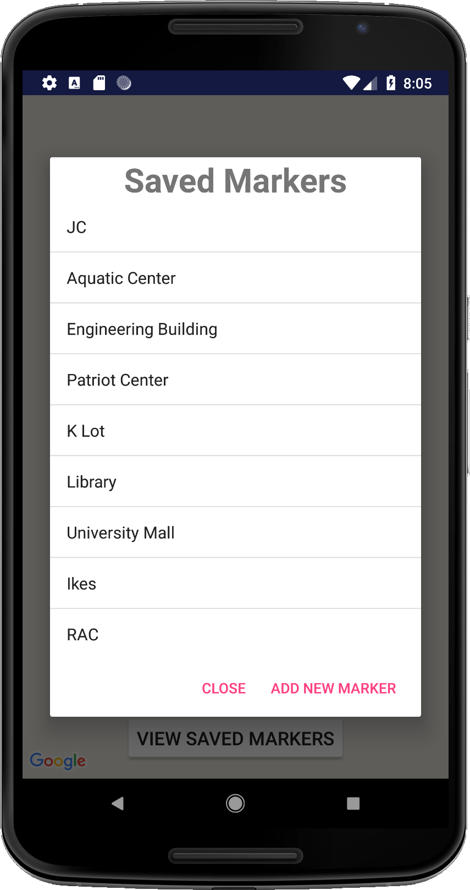
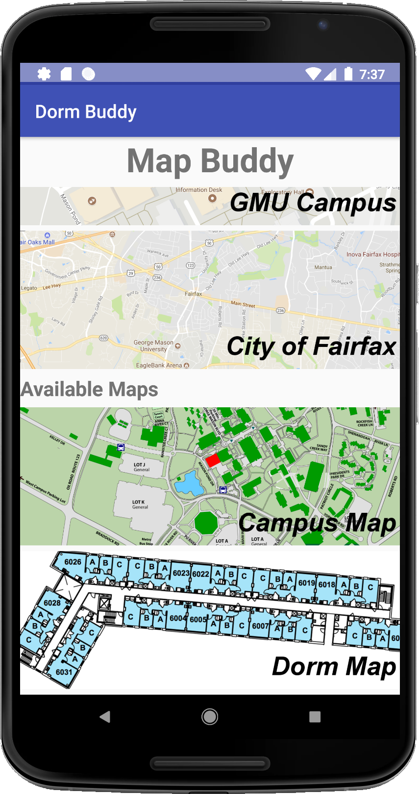
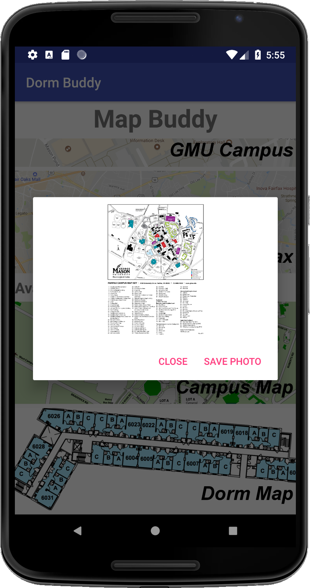

Purpose
Interactive Maps
Local Maps


Sample floor map of John Doe
 Interactive Campus Map
Interactive Campus Map
 Listing of saved markers
Listing of saved markers
 Interface for adding a marker
Interface for adding a marker

Campus map after adding a "Hub" marker

Campus map after deleting the "Hub" marker